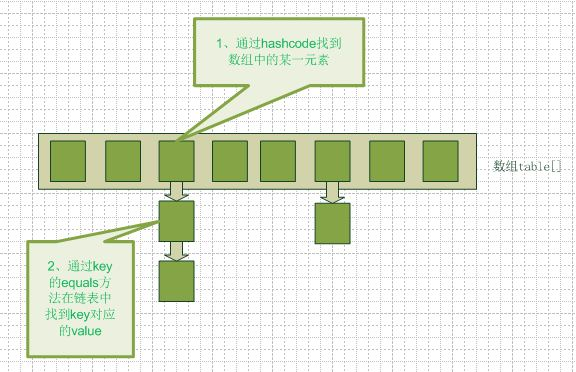

HELLO,
MY NAME IS XuJianGuo AND THIS IS MY BLOG
Java集合大家族
各类之间的关系
下面给出一幅关系图，实线边框的是实现类，比如ArrayList，LinkedList，HashMap等，折线边框的是抽象类，比如AbstractCollection，AbstractList，AbstractMap等，而点线边框的是接口，比如Collection，Iterator，List等，读者们认真阅读一下，大致了解一下各类的关系，对整个来个大概的把握。

对List的选择
在实际项目中，什么情况下选择什么List对我们的程序的质量有着明显改变，在讨论怎么选择之前，我想有必要了解一下各种List的特点及其内部实现结构，这往往能给我们更好的判断。
ArrayList:它是一个大小可变数组的实现，允许存储包括null在内的所有元素，下面针对几个点展开叙述：
1.内部的存储数据结构。它底层是采用Object数组进行存储，数组的特点就是连续的存储空间，随机访问速度块，但移动元素的开销大。ArrayList就是在数组的基本上增加了可变大小的特性，省下了开发者自行扩容的操作。
2.容量可变策略。我们仔细看看add方法的源码就会发现：ArrayList首先会调用ensureCapacityInternal方法先检查是否需要扩容，需要的就采用newCapacity = oldCapacity + (oldCapacity >> 1)的方式，即增加原来容量的1/2。
3.面对大量数据时的处理。如果ArrayList用于存储大量数据的时候，我们必须明白一些问题。第一，ArrayList的容量也是有最大值的，它的最大值大概是21亿左右。第二，扩容的策略会导致Arrays.copyof方法的调用，会消耗时间，所以必要的时候指定大小可以减少时间的开销。
4.线程安全。你一看ArrayList的源代码就直到它是线程不安全的，没有做好线程安全的问题，这是跟Vector最大的区别，Vector是一个古老的线程安全的可变大小的容器。下面给出一种简单的线程安全解决方案：
public void createSafeArrayList() {
List list = Collections.synchronizedList(new ArrayList());
}
翻翻看Collections的内部实现，源码它的内部维护了一个List的实现类，每次调用ArrayList的方法时候，就在前面添加synchronized关键字，也就是先加锁。看了这个实现，我突然就想到了用Cglib的动态代理去实现这个，感觉原理跟Collections的是一致的，下面简单尝试一下：
class SafeArrayList implements MethodInterceptor {
private Enhancer enhancer = new Enhancer();
private final Object mutex = new Object();
public Object getProxyList(Class clazz) {
enhancer.setSuperclass(clazz);
enhancer.setCallback(this);
return enhancer.create();
}
@Override
public Object intercept(Object obj, Method method, Object[] args,
MethodProxy proxy) throws Throwable {
Object result = null;
synchronized (mutex) {
result = proxy.invokeSuper(obj, args);
}
return result;
}
}
public class CglibProxyDemo {
public static void main(String[] args) {
SafeArrayList proxy = new SafeArrayList();
ArrayList list = (ArrayList) proxy.getProxyList(ArrayList.class);
list.add("xujianguo");
System.out.println(list);
}
}
5.优化点。在看了ArrayList的源码后我感觉它在扩容上是有作实现，但是在容量减少后是没有做处理的。我们可以假设这样的一种情况，ArrayList在扩容后到达100万大小，但是突然又减少到1000个，之后就稳定了，这样的话ArrayList里面其实是浪费了很多空间，所以我认为ArrayList在实现上可以增加一个减容的算法，去在容量减少的时候更改容器的大小。
LinkedList:它跟ArrayList最大的不同就是内部的数据结构，它采用的是链表的方式存储数据的，所以没有容量方面的问题，在线程安全的问题上处理策略大略跟ArrayList相同。
Vector:它跟ArrayList最大的不同就是它是线程安全的，大部分方法上都加上了synchronized关键字，看看内部方法的实现，其实跟ArrayList是一样的。
Stack:它是在Vector的基础上实现扩展，来实现了基于LIFO的数据结构的容器。
上面很简单粗暴的介绍了一些常用的List，下面从几个情况下探讨应该选择哪个List：
1.随机访问。在有数组作为底层支撑的ArrayList和Vector，在随机范文的速度上优于LinkedList。所以如果需要执行大量的随机访问。链表结构不是一种很好的选择。
2.插入和删除如果需要经常性在列表中执行插入和删除的操作，LinkedList的开销相对低廉很多。因为ArrayList在插入时，必须创建空间，移动后面的元素。而LinkedList只需链接新的元素，而不必修改列表中剩余的元素，如果列表多大，代价都一样。
3.遍历。站在前人的肩膀上，我们可以得出ArrayList的get(i)方法的遍历比foreach的遍历要快，因为底层是数组，直接使用下标会快很多。LinkedList的foreach比get(i)要快，因为foreach采用迭代器，往下面遍历即可。总的来说ArrayList的遍历是比LinkedList的要快一点，基于它们底层的实现。
对Map的选择
我们都知道Map是一种维护了键值关联关系的结构，可以通过键来查找值，在Map里面包含了几种实现，下面我们挑几个讲解一下：
HashMap:基于哈希表的Map接口的实现，允许使用null值和null键，不保证映射的顺序，下面我们着重介绍节点：
1.存储数据结构。采用数组+链表的方法存储数据（看下图），初始化Entry数组，然后Entry又是一个链表结构，用next属性存储下一个引用，这样就产生了我们的哈希表结构了。
2.存储过程。当我们调用put方法的时候，传入key和value，HashMap首先会计算key的hash值，hash值跟数组大小求余得到索引，就找到对应的数组元素Entry，然后就可以得到一条链表了，顺着这条链表看看有木有跟key的值相等的，有的话就替换新的value，没有的话就构建一个新的Entry插入链表中。
3.初始容量和加载因子。容量是哈希表中桶的数量，初始容量只是哈希表在创建时的容量。加载因子是哈希表在其容量自动增加之前可以达到多满的一种尺度。当哈希表中的条目数超出了加载因子与当前容量的乘积时，则要对该哈希表进行rehash操作（即重建内部数据结构），从而哈希表将具有大约两倍的桶数。
4.线程安全问题。HashMap是线程不安全的，而HashTable就是线程安全的。
LinkedHashMap:基于哈希表和链表的Map接口的实现，继承了HashMap，通过添加Entry类的属性来实现双向链表，维护插入的顺序。
1.存储数据结构。在哈希表的基础上，为Entry添加了before和after属性，使得哈希表上的节点都直到自己前后插入节点是谁，从而维护了插入顺序。
2.具有LRU特性。LRU就是一种近期最少使用算法，就是找到最老的那个。在HashMap中，我们是无法标识一个最老的元素。但是在LinkedHashMap中维护了插入的顺序，在链表中的第一个节点就是最老的元素了，这样就很容易实现这个算法，下面我们给出一个LRU缓存的实现：
import java.util.LinkedHashMap;
import java.util.Map;
import java.util.Set;
/**
* 基于LinkedHashMap实现LRU缓存
*
* @author xujianguo
* @email ray_xujianguo@yeah.net
* @time 2015年5月17日
*/
public class LRUCache {
// 缓存最大容量
private final int maxCacheSize;
// 默认的负载因子
private final float defaultFactor = 0.75f;
// 缓存
private LinkedHashMap cache;
public LRUCache(int initSize) {
maxCacheSize = initSize;
// 保证不触发rehash
int capacity = (int) Math.ceil(maxCacheSize / defaultFactor) + 1;
cache = new LinkedHashMap(capacity, defaultFactor, true) {
// 在容量超过执行大小的时候就移出最老的元素
@Override
protected boolean removeEldestEntry(java.util.Map.Entry eldest) {
return size() > maxCacheSize;
}
};
}
public synchronized void put(K key, V value) {
cache.put(key, value);
}
public synchronized V get(K key) {
return cache.get(key);
}
public synchronized V remove(K key) {
return cache.remove(key);
}
public synchronized Set> getAll() {
return cache.entrySet();
}
public synchronized int size() {
return cache.size();
}
public synchronized void clear() {
cache.clear();
}
}
Hashtable:HashMap的一个线程安全的版本。
IdentityHashMap:这个是一个比较特殊的Map，HashMap比较key的时候是调用equals方法，而IdentityHashMap是通过==判断key的相等。在一般的情况下我们是用不到的，但是有些情况下就必须使用这个特性，如vm中的所有对象都是独一无二的，哪怕两个对象是同一个class的对象，而且两个对象的数据完全相同，对于jvm来说，他们也是完全不同的，如果要用一个map来记录这样jvm中的对象，你就需要用IdentityHashMap，而不能使用其他Map实现。下面来个example理解一下：
import java.util.HashMap;
import java.util.IdentityHashMap;
import java.util.Map;
class Person {
private String name;
private int age;
public Person(String name, int age) {
this.name = name;
this.age = age;
}
@Override
public boolean equals(Object obj) {
if(obj instanceof Person) {
Person target = (Person)obj;
if(name.equals(target.name) && age == target.age) {
return true;
} else {
return false;
}
} else {
return false;
}
}
@Override
public int hashCode() {
return name.hashCode() + age;
}
@Override
public String toString() {
return name + " : " + age;
}
}
public class IdentiyHashMapDemo {
public static void main(String[] args) {
Person person1 = new Person("xujianguo", 22);
Person person2 = new Person("xujianguo", 22);
System.out.println(person1 == person2);
Map map = new HashMap();
map.put(person1, true);
map.put(person2, true);
System.out.println(map); //{xujianguo : 22=true}
Map lmap = new IdentityHashMap();
lmap.put(person1, true);
lmap.put(person2, true);
System.out.println(lmap); //{xujianguo : 22=true, xujianguo : 22=true}
}
}
WeakHashMap:以弱键实现的基于哈希表的Map。在WeakHashMap中，当某个键不再正常使用时，将自动移除其条目。更精确地说，对于一个给定的键，其映射的存在并不阻止垃圾回收器对该键的丢弃，这就使该键成为可终止的，被终止，然后被回收。丢弃某个键时，其条目从映射中有效地移除，因此，该类的行为与其他的Map实现有所不同。
import java.util.Map;
import java.util.WeakHashMap;
class Element {
private String id;
public Element(String id) {
this.id = id;
}
@Override
public boolean equals(Object obj) {
return obj instanceof Element && id.equals(((Element)obj).id);
}
@Override
public int hashCode() {
return id.hashCode();
}
@Override
public String toString() {
return id;
}
@Override
protected void finalize() throws Throwable {
System.out.println("finalize " + getClass().getSimpleName() + " id=" + id);
}
}
class Key extends Element {
public Key(String id) {
super(id);
}
}
class Value extends Element {
public Value(String id) {
super(id);
}
}
public class WeakHashMapDemo {
public static void main(String[] args) {
int size = 1000000;
Key[] keys = new Key[size];
Map map = new WeakHashMap();
for(int i = 0; i < size; i++) {
Key key = new Key(Integer.toString(i));
Value value = new Value(Integer.toString(i));
if(i % 3 == 0)
//被keys数组引用着的对象不会被回收
keys[i] = key;
map.put(key, value);
}
System.gc();
}
}
其实WeakHashMap可以理解为一种节约存储空间的技术，将引用存储进WeakHashMap后被包装成WeakReference，进来gc的时候允许垃圾回收器自动清理。
EnumMap:与枚举类型键一起使用的专用Map实现。枚举映射中所有键都必须来自单个枚举类型，该枚举类型在创建映射时显式或隐式地指定。它的存储结构就是用两个数组，一个存储keys，一个存储values，不用做什么哈希的处理，简洁很多。
TreeMap:基于红黑树的实现，查看键值队时，它们会被排序，排序的次序由Comparator决定。TreeMap的特点在于，所得到的结果是经过排序的。
import java.util.Comparator;
import java.util.Map;
import java.util.TreeMap;
class Node {
private int id;
public Node(int id) {
this.id = id;
}
public int getId() {
return id;
}
public String toString() {
return "node" + id;
}
}
class NodeComparator implements Comparator {
@Override
public int compare(Node o1, Node o2) {
if(o1.getId() > o2.getId()) {
return 1;
} else if(o1.getId() < o2.getId()) {
return -1;
}
return 0;
}
}
public class TreeMapDemo {
public static void main(String[] args) {
Node node1 = new Node(2);
Node node2 = new Node(6);
Node node3 = new Node(3);
NodeComparator comparator = new NodeComparator();
Map map = new TreeMap(comparator);
map.put(node1, "a");
map.put(node2, "b");
map.put(node3, "c");
System.out.println(map); //{node2=a, node3=c, node6=b}
}
}
对Set的选择
一个不包含重复元素的collection。更确切地讲，set不包含满足e1.equals(e2)的元素对e1和e2，并且最多包含一个null元素。
HashSet:类中维护了一个HashMap，也就是说HashSet其实就是HashMap的key值。我们通常调用HashSet的方法实际上都是在调用HashMap的方法。
LinkedHashSet:根据元素的hashCode值来决定元素的存储位置，但是它同时使用链表维护元素的次序。这样使得元素看起来像是以插入顺序保存的，也就是说，当遍历该集合时候，LinkedHashSet将会以元素的添加顺序访问集合的元素。
TreeSet:SortedSet接口的唯一实现类，TreeSet可以确保集合元素处于排序状态。